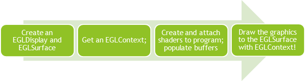
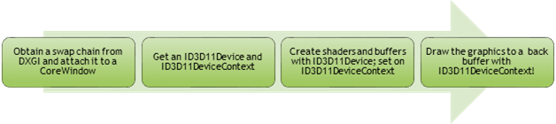
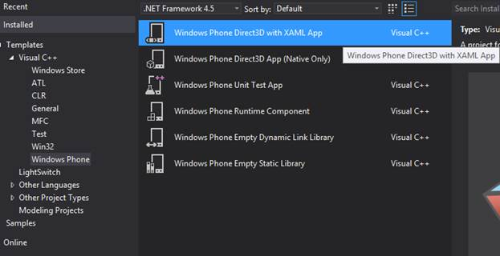
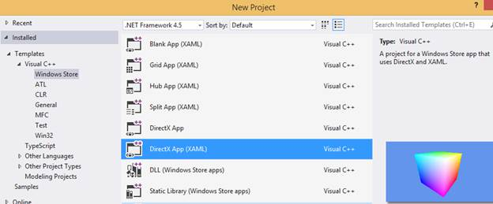

跨平台移动应用开发的渲染解决方案综述
在移动设备上做应用/游戏开发，实现跨平台是主流。对于应用/游戏的逻辑功能和核心算法部分，如果是用C++进行开发的，因为iOS/Android/Windows Phone 8/Windows Store均支持Native的C++开发，所以可以轻松的移植到各个平台，应用/游戏的Backend也有如Photon这样的跨平台解决方案。对于一部分图形要求很高的应用，如游戏和一些UI定制化需求很多的应用，渲染部分往往需要花更多的精力实现移植。对于渲染部分，跨平台开发者有以下三种选择：
1） 使用已有的一些跨平台图形解决方案，如cocos2D-x, Unity 3D等游戏引擎以及HTML5。
2） 将渲染部分在程序设计时独立，针对不同的平台分别实现渲染。在Windows Phone / Windows Store应用中，DirectX和XAML可以结合使用，从而方便的与第三方SDK结合使用。
3） 将现有的渲染代码通过工具映射到其他平台。如开源的Angle project可以将OpenGL ES自动映射到DirectX。
本文将分别对这三种选择依次作介绍，为开发者顺利完成应用/游戏在渲染部分的移植作一个参考。因时间和能力有限，谬误之处请不吝指教。
（1） 使用游戏引擎/HTML5等现有的跨平台解决方案
cocos2d-x：cocos2d-x是一个开源免费、易学易用的2D跨平台游戏引擎，支持Windows Phone, Windows 8, iOS和Android多个平台。目前是国内最流行的2D游戏引擎。其下载地址为：
http://www.cocos2d-x.org/news/143
Unity 3D： Unity 3D是一个非常强大的商用跨平台开发工具，支持Windows Store, Windows Phone, iOS, Android, Wii等多个平台。Unity 3D是移动平台上3D引擎的领头羊，同时Unity 3D也能很好的支持2D图形开发。下载地址：
http://unity3d.com/unity/whats-new/unity-4.3
XNA：XNA可支持Windows, Xbox 360和Window Phone，以前使用XNA开发的针对Window Phone 7.x的游戏仍然可以在Windows Phone 8上运行。但不支持创建新的目标设备为WP8的游戏。请参考：
http://msdn.microsoft.com/en-us/library/windowsphone/develop/jj207003(v=vs.105).aspx
http://msdn.microsoft.com/en-us/library/bb200104.aspx
MonoGame：MonoGame旨在帮助XNA开发者在Windows
Phone 8，
Windows 8，iOS， Android，Mac，Linux等多个平台实现跨平台开发。官方主页：
http://www.monogame.net/
在开源平台codeplex上的页面：http://monogame.codeplex.com/
Marmalade：Marmalade是一个非常有特色的跨平台游戏引擎，它支持在Windows上将应用Deploy至iOS。支持将OpenGL的程序直接转换成DirectX11的以移植到Windows Phone平台上。请参考：
https://www.madewithmarmalade.com/
http://www.madewithmarmalade.com/windows-phone-8
HTML5: 除了游戏引擎，还可以使用HTML5实现跨平台。对Windows Store游戏，可使用HTML5 和 JavaScript。如果熟悉HTML5 和 JavaScript （WinJS） 的开发，同时游戏不需要复杂的动画效果，并且对于游戏的实时性能没有非常高的要求，可以考虑这种游戏开发模式。
推荐使用的情景：充分利用HTML5 和 JavaScript（WinJS）的开发经验。 方便页游的迁移，缩短开发周期
不推荐使用的情景：如果你的游戏有大量的图像处理，或者对性能要求很高，使用HTML5 和 JavaScript 开发模式就不太适合你的游戏。 最好使用DirectX 和 C++ 结合。
请参考：http://msdn.microsoft.com/en-us/library/windows/apps/hh465158.aspx
开发例子：design.htmlwindowsapps/JavaScript-and-HTML5-touch-d96f6031
（2）针对不同平台分别用OpenGL / OpenGL ES或者DirectX实现渲染
在跨平台应用程序设计的时候，我们可以将渲染部分独立，最简单的设计是创建 Renderer类，分别针对Windows Phone, iOS和Android实现。众所周知，OpenGL ES主要用于Android和iOS平台的开发。而WP8和Windows Store使用DirectX11 API。接下来我们重点比较OpenGL和DirectX的异同，供开发者在切换平台时参考。
OpenGL ES / OpenGL与DirectX性能比较
这是一个在OpenGL和DirectX诞生以来很多人比较热衷于讨论的问题，所以在这里简要的提一下。其实一款显卡在设计的时候就会考虑要支持OpenGL和DirectX两种标准的所有feature，而不管是GLSL还是HLSL的shader，在经过驱动编译后都是在同样的硬件中同样的并行计算模块上运算，纹理等resource也是存储在同样的显存上。OpenGL和DirectX实现的应用程序其性能更多取决于驱动的优化程度而非OpenGL / DirectX API的优劣。OpenGL或者DirectX的API的选择对游戏的性能的影响主要局限于CPU部分而不是GPU。例如AMD最近发布的Mantle API其主要优化也是集中于减少CPU的开销，且仅适用于AMD显卡。而OpenGL和DirectX的API对CPU部分开销的比较至今没有一个定论，也即没有一方是明显优于另一方。OpenGL ES在设计时是参考OpenGL的，可以说是OpenGL的一个子集，其API也没有优于DirectX的说法。
开发者如果对游戏性能有所顾虑，可以更多的可考虑一些平台相关的特性而非API本身。例如在iOS使用pvr格式的纹理(PowerVR的有损压缩格式)，而在Windows平台使用DDS格式的纹理。在下文中有关于手机纹理的详细说明：
硬件对OpenGL ES和DirectX的支持
在写这篇文档的时候(2013年10月)，智能手机普遍可以支持OpenGL ES 2.0或以上了。下面的表格列出了OpenGL ES与DirectX的比较。OpenGL ES 2.0相当于DirectX 3D的feature level 9。OpenGL ES 2.0所支持的GLSL对应于DirectX的HLSL。
OpenGL ES版本列表
|
OpenGL ES版本号 |
对应OpenGL版本 |
对应的DX版本 |
版本特性 |
|
1.0 |
OpenGL 1.3 |
低于DX9 |
Fixed function rendering |
|
1.1 |
OpenGL 1.5 |
低于DX9 |
Fixed function rendering。虽然OpenGL 1.5中引入了ARB shader，但是OpenGL ES 1.1中仍然是不支持的。 |
|
2.0 |
OpenGL 2.0 |
DX9 |
支持GLSL |
|
3.0 |
OpenGL 3.0 |
DX10与DX9之间 |
兼容OpenGL ES 2.0，但不支持DX10中才有的Geometry Shader, OpenGL自3.2版本开始支持Geometry Shader. |
OpenGL和OpenGL ES详细信息可参考Spec或Wiki中的介绍。可参考下面的链接:
http://www.khronos.org/opengles/
http://en.wikipedia.org/wiki/OpenGL
http://en.wikipedia.org/wiki/OpenGL_ES
DirectX 版本（忽略DirectX9以前版本，因为不论WP还是Win8的硬件最低要求都是支持DX 9.1）
|
DX版本 |
与OpenGL ES对应关系 |
支持的 Shader |
|
9.x |
功能上相当于OpenGL ES 2.0 |
Vertex Shader, Pixel Shader |
|
10.x |
包含OpenGL ES 3.0的feature |
增加了 Geometry Shader |
|
11.x |
包含DX10且包含OpenGL ES 3.0 |
增加了 Hull Shader和 Domain Shader |
各应用平台对OpenGL ES、DirectX以及OpenGL(非ES)的支持
|
Android |
iOS |
Windows Phone / Windows Store |
|
根据下面的讨论，在2010年，已经有超过75%的Android设备可以通过NDK支持OpenGL ES 2.0. 估计目前绝大多数Android设备均可使用至少OpenGL ES 2.0。 https://groups.google.com/forum/#!topic/android-developers/HBddHFyxYeo
需要Android 4.3或以上才能支持OpenGL ES 3.0 |
从iPhone 3GS开始支持OpenGL ES 2.0.
从iPhone 5S开始支持OpenGL ES 3.0 |
从Windows Phone 8开始支持DirectX 11的API，其feature level是DX 9.3。开发必须使用DirectX 11的API。
Surface RT要求必须能运行DX 9.1的feature。
在Windows Store中针对x86和x64平台可使用DX10和DX11的feature。如无法支持DX9，需要在程序启动后显示说明。
在WP8之前的WP，可使用XNA开发，相当于DX9的feature level。
在Windows Store应用中，可使用OpenGL(非ES)开发。参考如下： |
OpenGL ES 2.0是目前在iOS和Android平台上通常使用的图形解决方案，常用的游戏引擎中的渲染部分是对OpenGL ES的封装。OpenGL ES 2.0所对应的DirectX 版本是DirectX 9，。而WP8和Windows 8对硬件的最低硬件要求即DX9，这使得基于OpenGL或者游戏引擎的应用向WP/Windows 8移植变成很自然的事情。
WP8和Windows 8应用商店的应用需要使用DX11的API进行编程，我们只需要将DX11的Feature level设置为DX9即可（参考下面的代码片断）对应于OpenGL ES 2.0。对于Windows Store中的应用，我们还可以使用DX10和DX11中的feature, 实现比OpenGL ES 2.0更加强大的渲染功能和更好的性能。
D3D_FEATURE_LEVEL featureLevels[] =
{
D3D_FEATURE_LEVEL_11_1,
D3D_FEATURE_LEVEL_11_0,
D3D_FEATURE_LEVEL_10_1,
D3D_FEATURE_LEVEL_10_0,
D3D_FEATURE_LEVEL_9_3,
D3D_FEATURE_LEVEL_9_2,
D3D_FEATURE_LEVEL_9_1
};
D3D_FEATURE_LEVEL APP_MIN_FEATURE_LEVEL = D3D_FEATURE_LEVEL_9_1;
如前所述，其实OpenGL ES 2.0是OpenGL 2.0的子集，对应于DirectX的Feature level 9所能够实现的功能是相当的。所以能够使用OpenGL实现的效果，通常也可以使用DirectX实现。Visual Studio支持两种DirectX的模板，一种是仅使用DirectX而不使用XAML，另外一种是将DirectX和XAML结合。我们比较推荐的是DirectX和XAML结合。因为XAML中定义的丰富的界面元素，交互的实现更加简单。第三方的SDK如微博，支付相关SDK都需要XAML的支持。在微软设计DirectX和XAML结合的时候，已经针对不同情景尽可能减少结合时对性能的影响。
XAML与DirectX结合使用的相关文档请参考：
http://blogs.msdn.com/b/windowsappdev/archive/2012/03/15/combining-xaml-and-directx.aspx
http://mobile.dzone.com/articles/directx-and-xaml-windows-phone
不管是OpenGL和DirectX，渲染时都需要维护所谓的Context。在Context中保存了一些渲染时的状态信息，例如是否使用了光照，是否启用了雾效，当前使用的纹理是什么等等。一般创建Context的过程都是由平台的模板自动生成，开发者只需要对Context进行适当的设置，并调用OpenGL或者DX的API进行渲染即可。OpenGL ES和DX11创建Context以渲染的过程分别如下（谨供参考，一般移动应用的程序员不需要关心细节）:


最常见的渲染过程是设定vertex buffer(VB)、index buffer(IB)、纹理、shader、调用绘制函数，最后显示缓冲中的渲染图像。下面的表格将主要从这几个方面对OpenGL ES和DX作比较。
|
|
OpenGL ES |
DirectX 11 |
|
Vertex buffer 和 Index buffer（通常称VB和IB）
在显存/内存中的存储方式和二者没有区别，均按顺序线性存放数据。但使用VB和IB的API略不同
|
VB和IB中定义的模型通过draw函数绘制。
通常使用glDrawElements函数 偶尔使用glDrawArrays函数(不需要IB)
glBegin, glEnd, glVertex3f等OpenGL函数在OpenGL ES中因为效率的考虑已经移除。 |
Draw通常使用DrawIndexed绘制VB/IB中的内容 也有DrawInstanced, DrawAuto等函数可供选择
注意Instancing在DX9中已经支持，在OpenGL 3.0才支持。 在DX 10以后还可通过Geometry shader实现Instancing |
|
VB中顶点的属性(Attribute) 如normal, color, texture坐标, position等等 |
使用glVertexAttribPointer函数分别指定顶点的各个属性
与DX的比较可参考下文： 将 OpenGL ES 2.0 缓冲区、uniform 和顶点属性与 Direct3D 进行比较
|
DX的API中没有Attribute这个概念，仅使用结构体 D3D11_INPUT_ELEMENT_DESC描述VB中每个顶点的数据格式
m_d3dDevice->CreateInputLayout |
|
Shader / Program
|
OpenGL中Shader又叫Program 支持运行时编译，即GLSL文本在运行时编译。
分Vertex Program和Fragment Program |
对于Windows Store和WP8需要在编译时将HLSL编译成生成伪汇编代码。如Shader编译出错则无法生成可执行文件。
在DX feature level 9中 分Vertext Shader和Pixel Shader分别对应于GLSL中的Vertex Program 和Fragment Program |
|
Shader的常数设置 |
API中包含Uniform，如：
glGetUniformLocation |
使用Constant Buffer相关函数，如： m_d3dDevice->CreateBuffer m_d3dContext->UpdateSubresource m_d3dContext->VSSetConstantBuffers |
|
资源管理，如纹理和buffer |
使用glCreateShader, glBufferData, glGenBuffers, glTexImage2D, eglBindTexImage等等API管理资源 |
使用ID3D11Device管理资源。一般会有一个ID3D11Device指针，用以调资源管理的DX API ，如函数CreateTexture2D()。在Windows Store的应用可以使用一些已经封装好的Loader类加载纹理资源。微软的Sample中常使用BasicLoader类，程序员可在其基础上进一步修改增强。 |
|
Context管理, 用于配置渲染管线 |
glAttachShader, glGetUniform*等等API |
一般创建ID3D11DeviceContext类的指针，再使用context指针调用Context配置的API |
|
显示缓冲区内容 |
使用SwapChain函数 |
使用Present函数 |
|
坐标系 X正方向为右，Y正方向为上。 详细的异同可参考下面： |
OpenGL使用右手坐标系，所以Z的正方向指向屏幕外。 |
DX使用左手坐标系。所以移植时三角形的顶点顺序要反向，Z的方向也要反向。
可以使用函数 D3DXMatrixPerspectiveRH 和D3DXMatrixOrthoRH来做右手坐标系的投影映射。详细请参考最左边的链接 |
从OpenGL API映射到DirectX 3D的API
======================================
仍在更新的关于OpenGL到DX映射的文档
http://msdn.microsoft.com/zh-cn/library/windows/apps/dn166866.aspx
常用的EGL
API Mapping参考
http://msdn.microsoft.com/zh-cn/library/windows/apps/dn166867.aspx
最后需要指出，DirectX在Windows Phone和Windows Store的应用开发中略有区别，可参考如下：
http://msdn.microsoft.com/en-us/library/windowsphone/develop/jj662930%28v=vs.105%29.aspx
以下是DirectX版本中渲染一个旋转的立方体的Render函数实现，结合前面描述的OpenGL与DirectX的比较，读者可与前面Angle Project中RotatingCube的Sample做个比较。
void Sample3DSceneRenderer::Render()
{
// Loading is asynchronous. Only draw geometry after it's loaded.
if (!m_loadingComplete)
{
return;
}
auto context = m_deviceResources->GetD3DDeviceContext();
// Set render targets to the screen.
ID3D11RenderTargetView *const targets[1] = { m_deviceResources->GetBackBufferRenderTargetView() };
context->OMSetRenderTargets(1, targets, m_deviceResources->GetDepthStencilView());
// Prepare the constant buffer to send it to the graphics device.
context->UpdateSubresource(
m_constantBuffer.Get(),
0,
NULL,
&m_constantBufferData,
0,
0
);
// Each vertex is one instance of the VertexPositionColor struct.
UINT stride = sizeof(VertexPositionColor);
UINT offset = 0;
context->IASetVertexBuffers(
0,
1,
m_vertexBuffer.GetAddressOf(),
&stride,
&offset
);
context->IASetIndexBuffer(
m_indexBuffer.Get(),
DXGI_FORMAT_R16_UINT, // Each index is one 16-bit unsigned integer (short).
0
);
context->IASetPrimitiveTopology(D3D11_PRIMITIVE_TOPOLOGY_TRIANGLELIST);
context->IASetInputLayout(m_inputLayout.Get());
// Attach our vertex shader.
context->VSSetShader(
m_vertexShader.Get(),
nullptr,
0
);
// Send the constant buffer to the graphics device.
context->VSSetConstantBuffers(
0,
1,
m_constantBuffer.GetAddressOf()
);
// Attach our pixel shader.
context->PSSetShader(
m_pixelShader.Get(),
nullptr,
0
);
// Draw the objects.
context->DrawIndexed(
m_indexCount,
0,
0
);
}方便开发者使用DirectX进行开发的工具和模板
=====================================
1. BasicLoader类：是微软开发的一个用于加载纹理的类，可同步也可异步加载。支持各种图像格式，也支持DDS格式的纹理。因为该类使用到Wic解码器用于图像解码，而Wic解码器仅限于PC，在WP上没有Wic解码器的支持，所以在WP上推荐使用DDS纹理。
2. 在Visual studio中集成了DDS纹理查看器，可直接打开DDS文件。也可提供一些常用的编辑功能。可以选择不规则区域并编辑。
3. 3D游戏中常用的FBX文件也可以在Visual Studio中打开并编辑。
4. DirectX的Debugging在调试时可以打开debugging模式。也可使用DirectX SDK中的工具PIX抓取一段，以单步跟踪D3D的API call。
5. Codeplex上开源的ToolKit
http://directxtk.codeplex.com/wikipage?title=Samples
6. 开发者从头开始开发的选择。新建一个WP 8/Windows Store应用的时候，可支持多种模板，有仅使用DX的模板，也有用XAML与D3D混编的模板。比较推荐的方式是使用XAML和DirectX混编的方式以充分结合两者的强大功能。下图是在新建一个Windows Phone应用时的模版，其中高亮的是Windows Phone Direct3D with XAML App，而Windows Store里的模版名为DirectX App，因为Windows Store的模版不仅集成了DirectX 3D，还集成了DirectX 2D和DirectX Write。


在应用开发的框架中，已经将常规的操作完成，如Buffer Chain，刷新，场景坐标系统设置等等。开发者需要做的是完成渲染和应用的逻辑。
对于Windows Store开发，在Shooting Game的Sample中开发者可学习一个现成的DirectX和XAML结合的游戏框架，包括关卡设计、应用内购买、交互、渲染和音效等等技术：
http://msdn.microsoft.com/en-us/library/windows/apps/hh780560.aspx
对于Windows Phone中的游戏开发，下面的Marble Maze这个Sample很不错：
http://code.msdn.microsoft.com/wpapps/Marble-Maze-sample-for-c9f3706b
C++/CX
==============
因为使用DirectX必须使用native code，所以必须使用C++/CX。这是微软定义的一个C++ Extension，是兼容标准C++的。所以移植C++代码是非常方便的。C++/CX中有一些非常方便的新特性，掌握起来也不难，可提高使用编程效率。如多线程、Lamda表达示等。对于C++程序员来说，快速掌握C++/CX可参考下面的文档：
多线程编程
http://channel9.msdn.com/events/BUILD/BUILD2011/PLAT-203T
C++/CX介绍及参考：
http://blogs.msdn.com/b/vcblog/archive/2012/08/29/cxxcxpart00anintroduction.aspx
3）使用AngleProject将现有的OpenGL ES代码转换
Angle是一个开源的项目，用于将OpenGL ES转成DirectX以在Windows平台中使用。Angle目前是Chrome浏览器中使用的渲染跨平台解决方案。
https://code.google.com/p/angleproject/
AngleProject编译方法
https://code.google.com/p/angleproject/wiki/DevSetup
直接使用Angle Project移植OpenGL ES会遇到下面的问题
====================================================
1. Angle使用DirectX
11的部分是针对feature
level 10的。而WP8/Surface
RT仅支持到feature
level 9.
2. Angle是动态在Runtime将GLSL转成HLSL，而我们需要在编译时即把GLSH转成HLSL. WP8不支持Runtime的shader编译.
Angle Project中对Windows Phone 8 / Windows 8 RT的适配
====================================================
Angle Project针对Windonws Phone 8/ Windows 8 RT进行了如下适配，并在cocos2d-x中使用
1. 支持编译时将GLSL转成HLSL并编译成.cso。.cso文件是在Windows Store和Windows Phone平台上HLSL编译后的文件。CSO文件应该是伪汇编程序，在经过驱动进一步编译后可以在显卡上运行。
2.将DX10的feature去除，因为WP8只支持到DX 9.3.
使用了Angle Project且支持WP8的cocos2D-x 2.2下载地址为：
http://www.cocos2d-x.org/news/143
在Angle Project的source code tree中有一个RotatingCube的例子，开发者可参考用于OpenGL ES向WP / Windows Store的移植。
https://github.com/stammen/angleproject/tree/dev/samples/RotatingCube
Anglge project关于WP8的说明如下。简而言之，Angle对WP8是支持的，对Windows Store 8目前支持有限制，但是如果应用是target到Windows 8.1是支持的。
https://github.com/stammen/angleproject
Angle Project (https://code.google.com/p/angleproject/) with support for Windows Store Apps (WinRT) and Windows Phone Apps (WP8). This version supports developing Windows Store Apps using Visual Studio 2013 and Windows 8.1. It is also ossible to develop a Windows Store App using Visual Studio 2012 and Windows 8.0 but this version will not be accepted in the Windows App Store.
Angle Project的RotatingCube这个Sample其 Render()函数如下。可以看到在例子中绘制使用的API是OpenGL ES的API。存储顶点数据可以使用directxmath.h中定义的数据结构。
void CubeRenderer::Render()
{
XMFLOAT4X4 mvp;
XMStoreFloat4x4(&mvp, (XMMatrixMultiply(XMMatrixMultiply(m_modelMatrix, m_viewMatrix), m_projectionMatrix)));
glClearColor(0.098f, 0.098f, 0.439f, 1.000f);
glClear(GL_COLOR_BUFFER_BIT | GL_DEPTH_BUFFER_BIT);
glUseProgram(m_colorProgram);
glUniformMatrix4fv(u_mvpColor, 1, GL_FALSE, &mvp.m[0][0]);
VertexPositionColor cubeVertices[] =
{
{XMFLOAT3(-0.5f, -0.5f, -0.5f), XMFLOAT3(0.0f, 0.0f, 0.0f)},
{XMFLOAT3(-0.5f, -0.5f, 0.5f), XMFLOAT3(0.0f, 0.0f, 1.0f)},
{XMFLOAT3(-0.5f, 0.5f, -0.5f), XMFLOAT3(0.0f, 1.0f, 0.0f)},
{XMFLOAT3(-0.5f, 0.5f, 0.5f), XMFLOAT3(0.0f, 1.0f, 1.0f)},
{XMFLOAT3( 0.5f, -0.5f, -0.5f), XMFLOAT3(1.0f, 0.0f, 0.0f)},
{XMFLOAT3( 0.5f, -0.5f, 0.5f), XMFLOAT3(1.0f, 0.0f, 1.0f)},
{XMFLOAT3( 0.5f, 0.5f, -0.5f), XMFLOAT3(1.0f, 1.0f, 0.0f)},
{XMFLOAT3( 0.5f, 0.5f, 0.5f), XMFLOAT3(1.0f, 1.0f, 1.0f)},
};
unsigned short cubeIndices[] =
{
0,2,1, // -x
1,2,3,
4,5,6, // +x
5,7,6,
0,1,5, // -y
0,5,4,
2,6,7, // +y
2,7,3,
0,4,6, // -z
0,6,2,
1,3,7, // +z
1,7,5,
};
glEnableVertexAttribArray(a_positionColor);
glEnableVertexAttribArray(a_colorColor);
glVertexAttribPointer(a_positionColor, 3, GL_FLOAT, GL_FALSE, sizeof(VertexPositionColor), cubeVertices);
glVertexAttribPointer(a_colorColor, 3, GL_FLOAT, GL_FALSE, sizeof(VertexPositionColor), reinterpret_cast(cubeVertices) + sizeof(XMFLOAT3));
glDrawElements(GL_TRIANGLES, ARRAYSIZE(cubeIndices), GL_UNSIGNED_SHORT, cubeIndices);
glDisableVertexAttribArray(a_positionColor);
glDisableVertexAttribArray(a_colorColor);
} Android平台上OpenGL ES函数调用时，使用GLES20.来调用，OpenGL ES的函数名是不变的。所以渲染部分如使用Angle Project迁移时需要对代码稍作调整，但并不复杂。
//sample: Android 的 Draw()函数
public void draw() {
// Add program to OpenGL ES environment
GLES20.glUseProgram(mProgram);
// get handle to vertex shader's vPosition member
mPositionHandle = GLES20.glGetAttribLocation(mProgram, "vPosition");
// Enable a handle to the triangle vertices
GLES20.glEnableVertexAttribArray(mPositionHandle);
// Prepare the triangle coordinate data
GLES20.glVertexAttribPointer(mPositionHandle, COORDS_PER_VERTEX,
GLES20.GL_FLOAT, false,
vertexStride, vertexBuffer);
// get handle to fragment shader's vColor member
mColorHandle = GLES20.glGetUniformLocation(mProgram, "vColor");
// Set color for drawing the triangle
GLES20.glUniform4fv(mColorHandle, 1, color, 0);
// Draw the triangle
GLES20.glDrawArrays(GLES20.GL_TRIANGLES, 0, vertexCount);
// Disable vertex array
GLES20.glDisableVertexAttribArray(mPositionHandle);
}